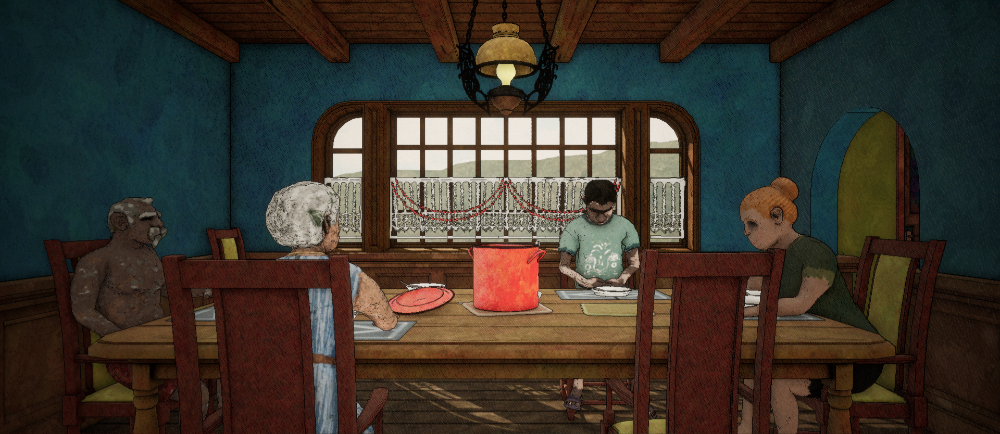
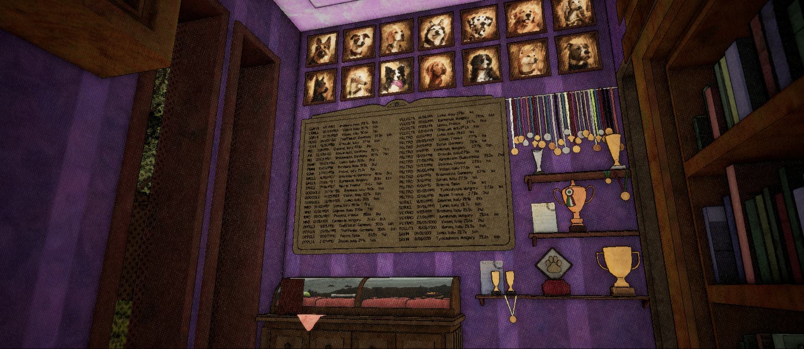
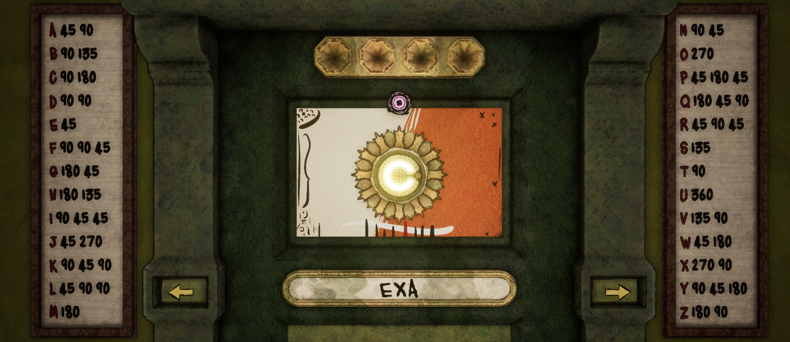

GLARING FLAW
is a narrative puzzle adventure built around shifting perspectives
Explore a secluded rural family estate where each room is observed through fixed camera angles, and progression depends on unlocking new viewpoints. Hidden doors, overlooked objects, and subtle environmental clues only emerge when seen from the right perspective. As the threat of an impending natural disaster forces Dino's family toward an uncertain future, the estate becomes a place suspended between tradition and change. What first appears familiar slowly reveals deeper layers of history, memory, and unresolved tension.



BASE FINIAL
A one-person game studio based in Hungary
Glaring Flaw is my first game, and the first step in what I hope will become a much longer journey. I'm learning something new with every part of its development, and I hope that, with time, I can turn those lessons into stranger, better, and more ambitious games :)
CONTACT